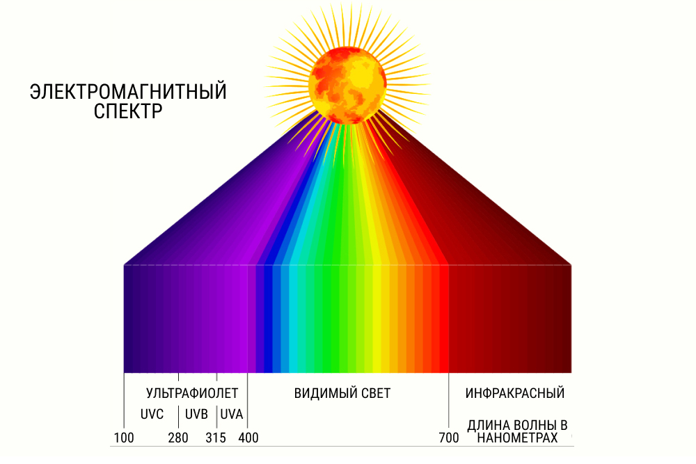
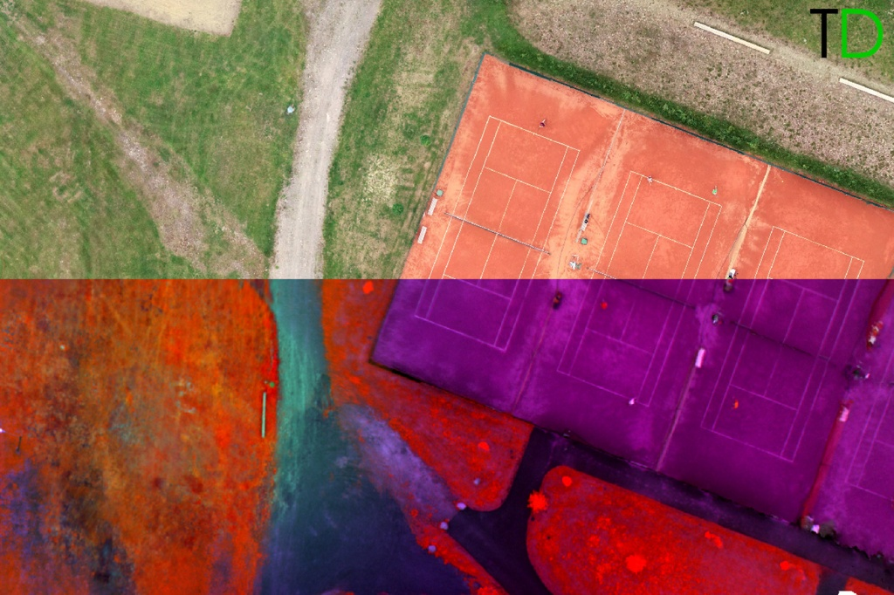
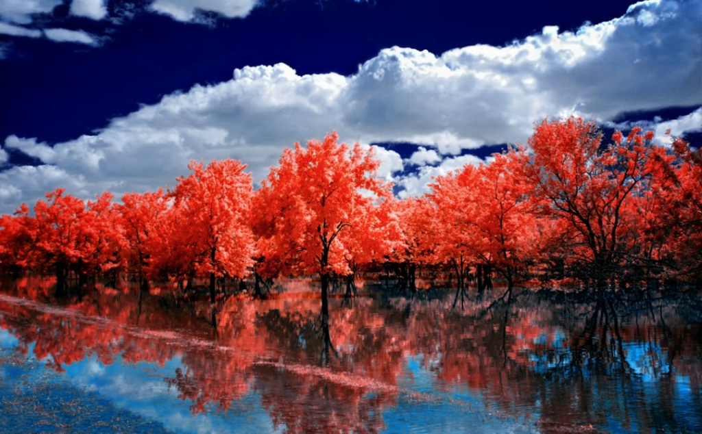
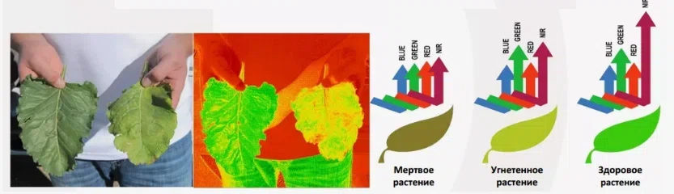
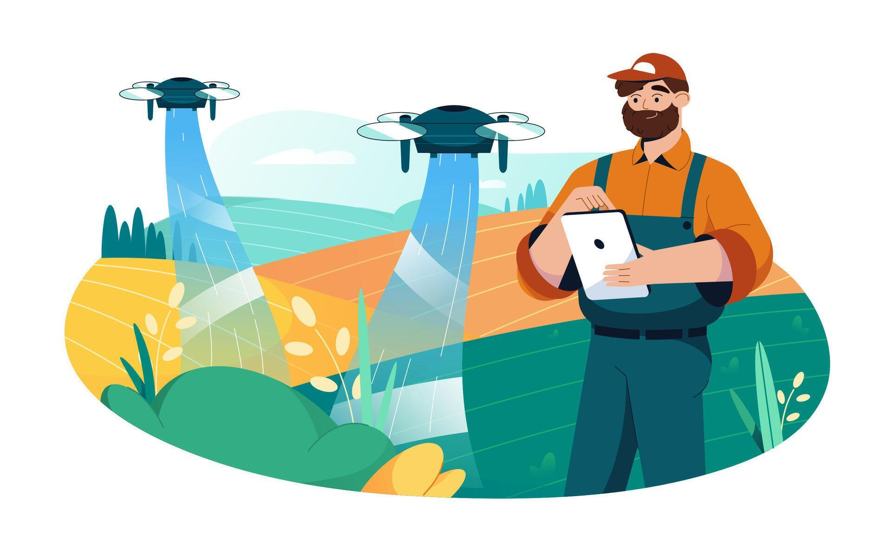
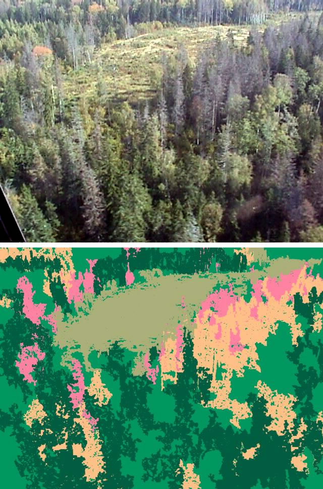

Глаза в небе: Как дроны видят невидимое
БПЛА и магия мультиспектральной съемки
Мы видим только верхушку айсберга
Что такое свет и спектр?
То, что мы называем «светом» — это лишь крошечная часть огромного электромагнитного спектра.
Наш глаз — как приемник, который ловит только одну радиостанцию (видимый свет: от красного до фиолетового).
А рядом «вещают» радиоволны (Wi-Fi), ультрафиолет (от него мы сгораем) и инфракрасное (тепловое) излучение.
Эти «невидимые» лучи несут в себе кучу информации, которую человек просто не замечает.

Обычная (RGB) vs Мультиспектральная камера
Камера смартфона (RGB) смешивает всего 3 цвета: Red (красный), Green (зеленый), Blue (синий). Она показывает мир так, как его видит человек.
Мультиспектральная камера на дроне «видит» 5, 7 или даже 10 разных диапазонов света одновременно.
Это как добавить к обычным очкам рентгеновское зрение и тепловизор одновременно.

Почему растения светятся в невидимом диапазоне?
Растения поглощают видимый свет (особенно красный и синий) для фотосинтеза.
Но инфракрасный свет они поглощать не могут (он их перегреет). Поэтому здоровые растения
отражают
его.
Чем здоровее и сочнее лист, тем сильнее он «светится» в инфракрасном диапазоне.
Если растение болеет — отражение падает. Это как детектор лжи для природы!

Как бы мы видели зелёные деревья, если бы замечали инфракрасное излучение.
NDVI — шкала здоровья растений
NDVI (Нормализованный относительный индекс растительности) — это математическая формула, которая сравнивает «красный» и «инфракрасный» цвет.
Результат переводится в шкалу от -1 до 1.
На картах это выглядит как «лайфбар» в видеоиграх: ярко-зеленый — суперздоровое растение, желтый — так себе, красный — больное или пустая земля.
Программы на компьютере сами строят такие карты за пару минут после полета дрона.

Сельское хозяйство: Точное земледелие
Раньше фермеры обходили поля пешком, чтобы найти больные растения.
Теперь дрон пролетает над гектарами за 20 минут. Программа показывает: «Вот здесь, на 3-м гектаре, начинается болезнь!».
Фермер точечно обрабатывает только этот участок, а не все поле целиком.
Выгода:
Экономия денег на химикатах, защита экологии и огромный урожай.

Экология: Мониторинг и спасение лесов
Болезни леса:
Обычно мы замечаем, что ель погибла, когда она уже стала коричневой. Мультиспектральная камера увидит стресс дерева за недели до этого.
Пожары:
Тепловизоры и инфракрасные камеры помогают находить скрытые очаги возгорания (тлеющие торфяники), которые не видно глазом.
Незаконная вырубка:
Сравнивая новые снимки со старыми, можно за секунды найти, где вырубили лес.

Снимок вырубки леса (сравнение обычного вида и спектрального анализа)
Помощь там, где нужнее всего
Поиск людей:
В лесу человека сложно найти из-за листвы. Камеры с тепловизором покажут потерявшегося по теплу тела даже ночью.
Оценка ущерба:
После наводнений или землетрясений дроны быстро строят карты разрушений, чтобы спасатели знали, куда ехать в первую очередь.
3D-карты:
Мультиспектральные дроны могут за час создать точную 3D-модель карьера или стройки (с точностью до сантиметра).
Снимок с тепловизора: люди в поле видны благодаря теплу их тел.
Проверка знаний
1. Что здоровое растение делает с инфракрасным светом?
А) Поглощает его
Б) Отражает его
В) Превращает его в тепло
2. Чем мультиспектральная камера отличается от обычной камеры смартфона?
А) Она видит больше спектров света, включая невидимые глазу
Б) Она всегда делает фото с огромным разрешением
В) Она может снимать через стены
3. Для чего нужен индекс NDVI?
А) Для оценки здоровья растений
Б) Для создания 3D-моделей зданий
В) Для измерения температуры воздуха
Проверить результаты
Спасибо за внимание!
Будущее уже летает над нами.
← Назад
1 / 10
Вперед →